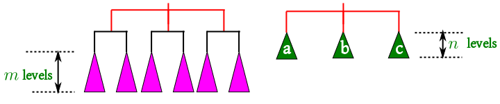
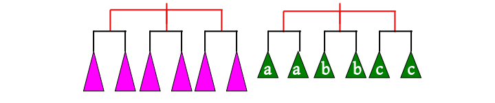
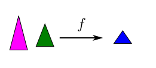
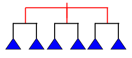
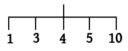

|
|---|
| The shape of the green triangle determines the shape of purple triangle |
|
|---|
| The shape of the green triangle determines the shape of purple triangle |
 |
|---|
 |
|---|
| Each leaf node "sprouts" by replicating |
 |
|---|
 |
|---|
x f
y. Similarly, $f(x)$ is f x. In
arithmetic, we have two types of minuses, unary and binary, much
to the confusion of kids. J
keeps up the tradition (both of arithmetic and of confusion) by allowing a same symbol to denote a
monad as well as dyad. Usually, the monad and the dyad denoted by
the same symbol are related, though this is not a requirement.
With all functions being written as binary and unary operators,
it is no waonder that J has large number of these. So to keep the
order of evaluation unambiguous we need to either put lots of
parentheses or we need to have some convention like precedence
and associativity. Even with as few operations as just +, -, *
and /, untrained kids find it difficult to remember rules of
precedence. You can imagine
how much more confusing it is going to be with many more
operators. Well, J has solved the problem by doing away with
precedence altogether (and thus confusing trained adults). The J dictum is "always proceed from right
to left". Before you and wonder about why we should proceed in
this "reverse" way, and suspect some Arabic influence,
let me point out that this is how we do it in math most of the
time: $(f\circ g)(x) = f(g(x))$ means apply $g$ first,
and then $f.$
1$\times 10^2+$ 0$ \times 10^1 + $0$\times 10^0.$The ancient Roman must have thought us crazy that we need so much math to just express a number. But of course we know the advantage. However, even we would be driven crazy if we have to write the above expression in full everyime we need to express a hundred. So we need an abbreviation: we have (arbitrary) symbols for all the possible coefficients (0,1,2,...,9) and then simply list the coefficients side by side. Is it really simple? Yes, when you see that even a kid can do it. No, when we remember that it took centuries for this system to evolve. Well, that is basically what happens for J also. J has a clever way of expressing many things by combining some basic objects. Arbitrary names of assigned to only the basic entities, and all other derived entities are expressed in their terms. Without abbreviations, however, this would not be of much practical value. So J uses very short names for its basic functions (at most two characters).
 |
|---|
x=: 1 3 4 5 10To find the number of highest level branches J provides a monad called
#. Let's put it to use:
# xJ responds with 5. Notice how I described
# in terms of
the input tree, and not as "a function to find the length of a
list".
Next, we shall see the arithmetic operations in J. The operations
for addition, subtraction and multiplication are usual. But J
uses % for division. All operations are done using floating
points (more on this later).
The expression
3 * 4 - 10 % 5is interpreted as $$ 3\times (4 - (10 \div 5)). $$ Amuse yourself by trying to guess the result of
5 - 1 - 1 - 1 - 1 - 1I have talked about a symbol having a monad and dyad interpretation. Here is one example. Used as a dyad
^
means raising to a power, as in:
3 ^ 2But used as a monad, it means $e^x$:
^ 2Next, let us take a look at some functional operators. We shall use the trigonometric functions, which we load as
load'trig'Then we can create
f=: sin + cos g=: ^ * sin h=: sin @ cos i=: ^ @ cosHere $f(x) = \sin x+\cos x$, $g(x) = e^x\sin x$, $h(x) = \sin(\cos x)$ and $i(x)=e^{\cos x}.$ The first two are examples of forks. Next let us see insertion in action. Suppose we want to compute $$ 1 + 3 + 4 + 5 + 10. $$ This means inserting the dyad
+ between each successive
pair. So we can write
+ / 1 3 4 5 10Guess the outcome of
- / 1 1 1 1 1Most often the
/ operator is used to accumulate some result
recursively (e.g., summing). You can use this to find